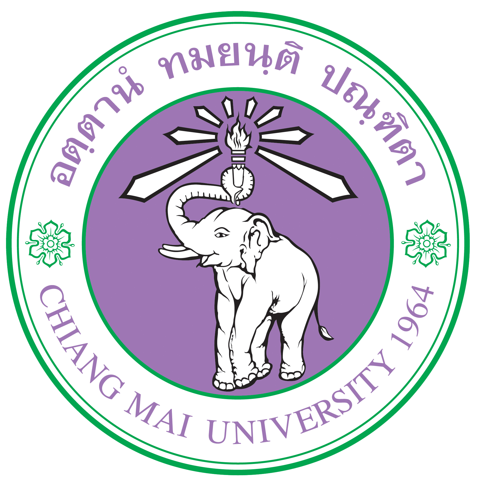
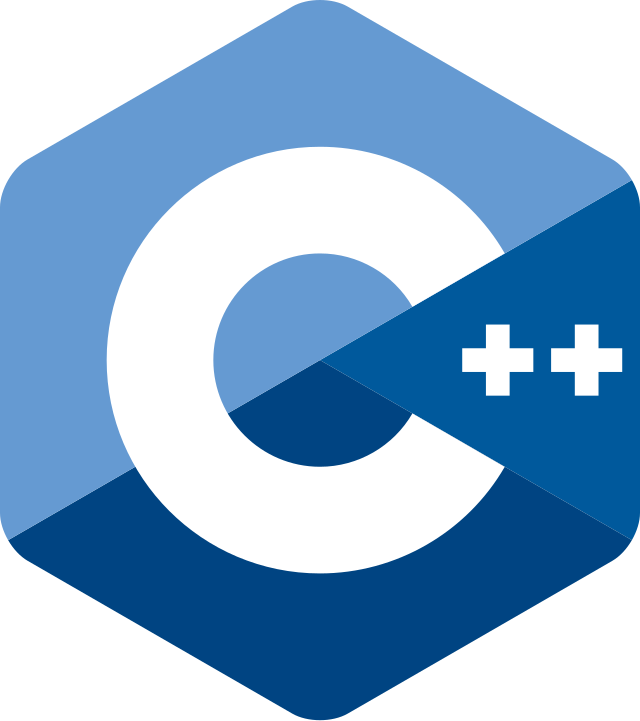

2rd-year Computer Engineering student, Chiang Mai University 
Project: My Restaurant ManagerğŸ•ğŸ”🹠Programming project for the course 261102 Computer Programming. Developed a program named My Restaurant Manager using  C++. The program is designed to manage restaurant operations including menu management📠, stock management📦 , table reservationsğŸ½ï¸ , billing💸 , and staff management👯.
Scratch Project: BRAWL CHECK🏁🤔🥊 Scratch project for the course 261103 Basic Computer Engineering. Developed a game in Scratch named BRAWL CHECK that combines checkers🏁 and fighting🥊 game styles. Players can customize their stats📊 before the battle to make the fights more varied and interesting.
Gaming🮠: Minecraft⛏️ , Dead by Daylight👻 , Satisfactory⚙️
Playing Music🶠: DrumsğŸ¥
Watching Anime📺💫